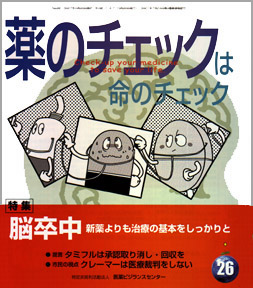

No.26 特集 脳卒中 2007年4月 発行
１９６０年頃、日本人の４人に１人は脳卒中で死亡していました。
１９６７年あたりを境にどんどん減少し、１９８０〜８２年には死因トップの座をがん（悪性新生物）に譲り渡し、
８６年以降は心疾患よりも少なくなりました。
食事の内容が豊かになり、塩分の摂取が減ってきたことで、
脳の血管が丈夫になってきたことが脳卒中死亡の減少に大きく貢献したのではないかと考えられます。
しかし、減少したとはいえ、依然としてまだ死因の第３位であり、死亡する人の８人に１人は脳卒中が原因ですから油断はできません。
死を免れても、軽い脳梗塞を含めると年間５０万人が脳卒中となり、
しばしば身体、精神、頭脳活動、会話など日常生活に欠かせない機能が障害され、
「生の質（QOL）」の著しい低下が長年にわたると、本人はもちろんのこと、家族も大変な負担を強いられます。
今回は脳卒中について、その起こり方や症状の見方、治療などについて解説します。
もくじ
特集
■脳卒中 典型的な症状は半身不随 ―浜 六郎
■脳卒中の治療 基本をしっかりと ―浜 六郎
■脳卒中の治療の評価リスト
■多めの水分は脳梗塞を予防するか？ ―木元 康介
■血栓融解療法の新薬t-PA「アルテプラーゼ」 判定保留
■新薬承認のカラクリ エダラボン 無効・危険
提言
■NPOJIPの提言
タミフルは承認取り消し・回収を ―浜 六郎
連載
■身近な薬の副作用（２）
化粧かぶれの薬 ステロイド外用剤
■映画のなかのクスリ（１９） 医療事故 ―木元 康介
■リレーエッセイ 「イギリス暮らし」 ―北澤 京子
■みんなのやさしい生命倫理 ２６
EBMの生命倫理（５）―谷田 憲俊
■薬害の歴史 編集長インタビュー 田井中克人さんに聞く
京都ジフテリア予防接種禍事件 ６８人もの幼な子が亡くなった
■市民の視点（１０）
医療裁判は、クレーマーがしているのではない ―勝村 久司
■海外の情報 利益相反について
■行ってきました
１ タミフル、ワクチンはあなたを守らない！
２ 薬害ヤコブ病訴訟和解確認書調印５周年記念行事
トピック
■インフルエンザ治療の根本的見直しを ―浜 六郎
質問箱
■１ インフルエンザの幼児に咳止め混合シロップは大丈夫？
■２ 授乳期の湿布薬は大丈夫？
■３ グラマリールの具体的な危険性について
■第５回医薬ビジランスセミナー収支報告
■読者の声
・経口避妊薬の身体への影響は？
・血圧とコレステロールが高い
・お客様のアドバイスに活用 など
■書評
・『ワーキングプア いくら働いても報われない時代が来る』
・『剖検率１００％の町 九州大学久山町研究室との４０年』
・『シネマの中の人間と医療 エシックス・シアターへの招待』
■講演案内
■読者モニター決定
■用語の解説
■編集後記
薬害の歴史 編集長インタビューより
京都ジフテリア予防接種禍事件―６８人の子どもの命が奪われた
田井中 克人さんに聞く
ジフテリアは、患者や無症候性保菌者の咳などから飛沫を介してジフテリア菌に感染し、
通常１〜１０日間の潜伏期間を経て発病します。重症者では虚脱、皮膚の蒼白、頻脈、意識障害、昏睡となって、
わずか１週間から１０日間で死亡する場合があるという非常に激烈な感染症です。死亡率は平均５〜１０％、
乳幼児や４０歳以上では２０％以上とされています。発展途上国などで今も蔓延しており、
１９９０年にロシアでのジフテリアの流行が欧州全体におよび大きな流行となりました。
日本でも戦前はたびたび流行していました。１９４５年の発生患者数は約１０万人もあり、このうち１０％近い人が亡くなっています。
１９５０〜６０年頃からジフテリア患者は激減しました。
栄養状態がよくなり衛生面も向上したことと共に、ワクチン接種による予防も功を奏したのでしょう。
しかし、予防のために打ったワクチンによって８４人もの乳幼児が亡くなった事件があったのです。
（以下、引用省略）
詳しくは本誌で。